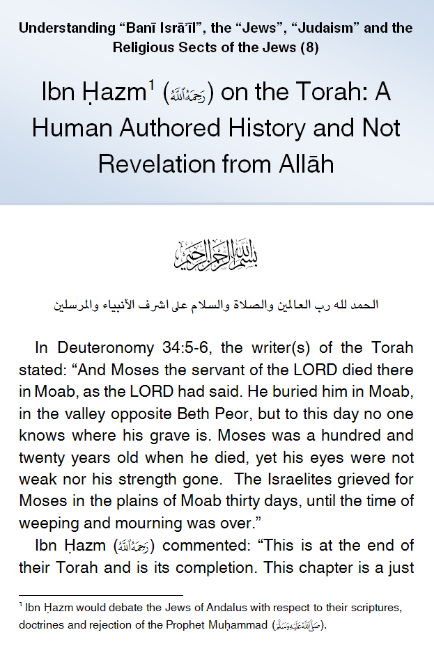
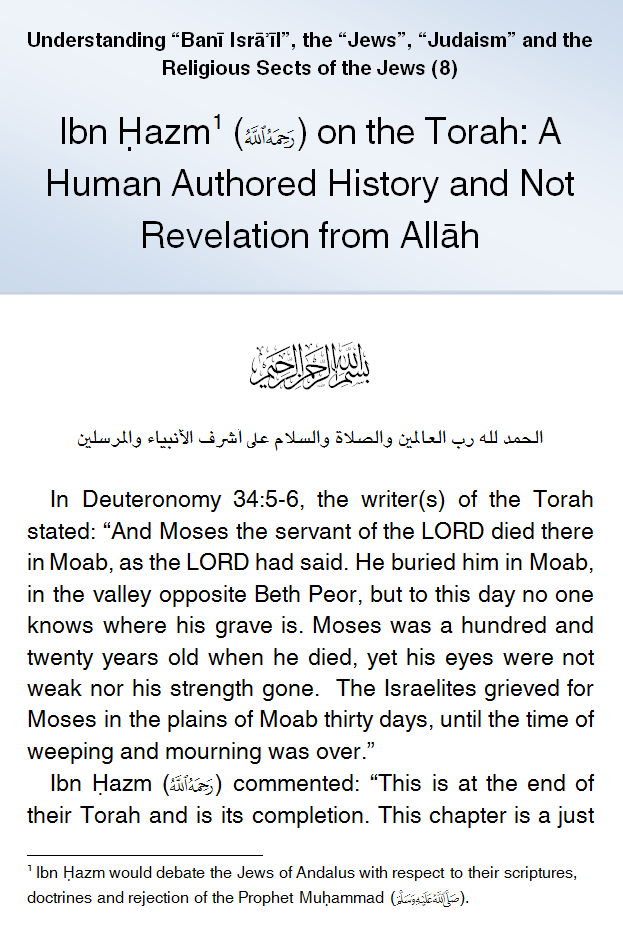

IslamMoses.Com
Posted by Abu Iyaad on Tuesday, September, 25 2018 and filed under Torah
Key topics: Ibn Hazm • Torah • Ezra

|
IslamMoses.Com |
|
Ibn Hazm (d. 456H) on the Torah: A Human Authored History and Not Revelation from Allāh Posted by Abu Iyaad on Tuesday, September, 25 2018 and filed under Torah Key topics: Ibn Hazm • Torah • Ezra 
|